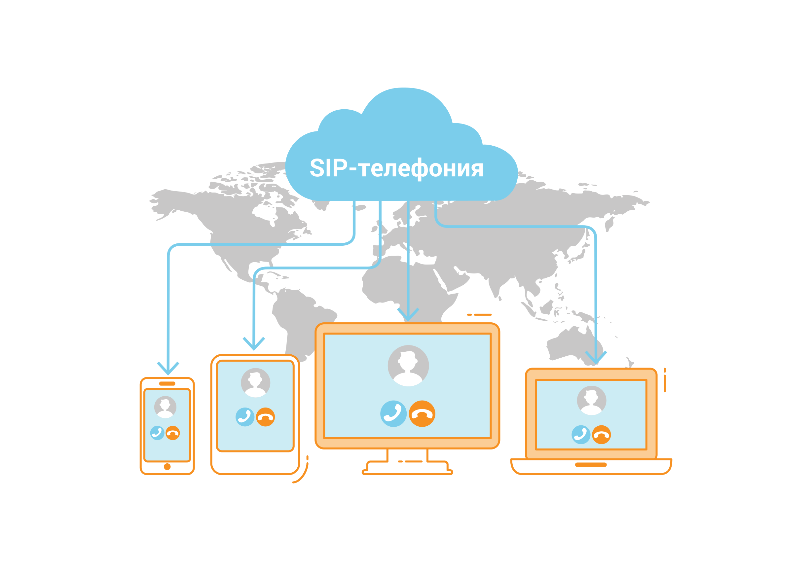
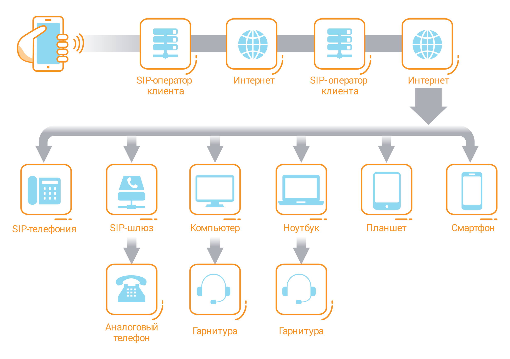

Как работает IP телефония SIP?
SIP — универсальный способ обмена информацией.
Иначе, язык взаимодействия различных устройств.
На базе данного протокола компьютеры и другие гаджеты
распознают друг друга и безошибочно обмениваются информацией.

SIP-телефония: схема звонка
- В момент соединения голос трансформируется и становится цифровым сигналом.
- Затем данная информация поступает в компьютер или другой гаджет.
- Передающее и принимающее устройства распознают друг друга.
- Дальнейшее их взаимодействие ведется по SIP-протоколу.
- Поток информации вновь изменяется и становится аналоговым.
- Абонент снимает трубку и слышит речь пользователя SIP-телефонии.
